Handbook
Everything for your first slideshow and beyond. The same handbook is built into the app: press F1.
Getting started
Diashow Studio turns photos, videos and music into a slideshow and saves it as an MP4 video. Everything runs on your PC, without the internet.
The quickest way is the assistant. It opens on the first start, and later from New slideshow with assistant on the home screen.
- Photos and videos: choose single files or a whole folder. Subfolders are included.
- Theme and music: click a theme and, if you like, add your own music.
- Show or export: play the slideshow or save it as a video.
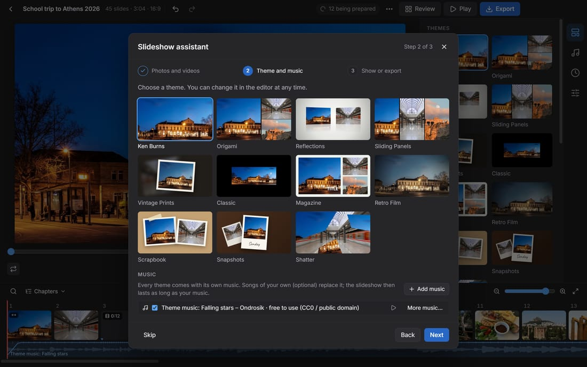
Other ways to start a slideshow:
- Drag photos, videos or folders into the window.
- New slideshow picks files; Play a folder shows a folder as a slideshow straight away.
- Open project… loads a
.dshowfile, e.g. a packed project from another PC.
Projects are saved automatically, in Documents\Diashow Studio. New photos are prepared in the background; you can carry on working right away.
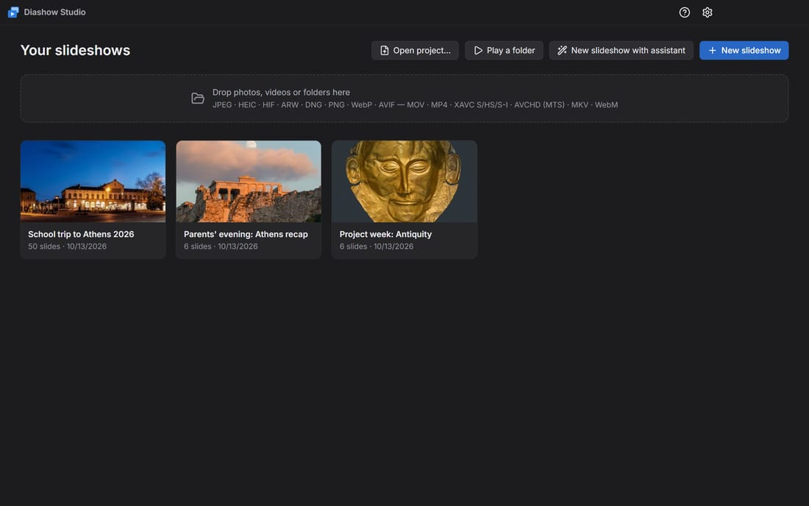
Editing
The editor has three areas: the preview in the middle, the tabs Themes, Music, Duration and Slide on the right, and the filmstrip with every slide at the bottom.
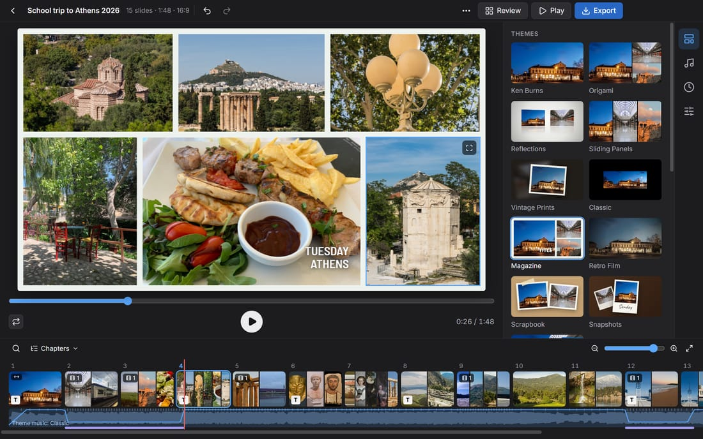
- Order: drag slides in the filmstrip. Dropping a slide on the middle of another combines both into one slide.
- Several slides: Ctrl+click, Shift+click or Ctrl+A. The Slide tab then changes them all together.
- Time on screen: drag the right edge of a card; a double-click there sets it back to automatic.
- Framing: drag in the preview to move the photo, scroll to zoom, double-click to reset.
- Text: Add text creates a text slide. The Slide tab adds text boxes on top of a photo.
- Chapters: the ⋯ menu has Day titles from capture date and Chapters from folder names, as well as Sort by capture date and Add end credits.
- Videos: trim them, change their speed (slow motion, time lapse) and Reduce shake in the Slide tab.
- Live Photos and Motion Photos: under Live Photo in the Slide tab, choose how the motion plays (for several photos at once too): Off (still), Live (once) at the start of the slide, Loop (the end fades smoothly into the start) or Bounce (forward and backward). Loop and Bounce play all the slide long, at least one cycle; the photo then has a slide of its own, and pixelated faces stay pixelated. Default follows Play Live Photos / Motion Photos in the Duration tab. In the filmstrip, the loop or bounce sign sits next to LIVE.
- Undo: Ctrl+Z, redo with Ctrl+Y. This works after a restart too: each slideshow keeps its last 100 steps.
Tip: Space plays the preview, ← and → step from slide to slide.
Filmstrip: zoom, search and chapters
- Zoom: − and + or the slider at the right above the filmstrip make the slides smaller or larger, and so does Ctrl+mouse wheel over the filmstrip (the spot under the mouse stays put). Show the whole slideshow fits every slide into the width. Small cards show only pictures; a thin blue line marks each chapter. The audio lane below fits at every size.
- Search: Ctrl+F or the magnifier. It looks in file names, chapters and day titles, captions, text slides, text boxes, names from the people list and the capture date: “5/12”, “May 12”, “Tuesday”, “May 2025”, also in German (“12.5.”, “12. Mai”, “Dienstag”). “Video” and “Live” find videos and Live Photos. With several words, each must match.
- The matches are listed above the search field and marked yellow in the filmstrip. ↑ / ↓ and Enter jump to a match: the slide is selected and shown in the preview. Enter / Shift+Enter or F3 / Shift+F3 go to the next / previous match, Esc closes the search.
- Chapters: the Chapters menu lists the title, chapters and text slides with their time; a click jumps there.
Inserting photos at a place
- Drag from Explorer: drop photos, videos or folders between two cards of the filmstrip; a blue line shows where they go. They are read as with any import (Live Photos and RAW+JPEG as one photo) and ordered by capture time. Dropped on the middle of a card, they join that slide when the theme shows several photos per slide and there is room. Dropped elsewhere in the window, they go behind the selection as before.
- Copy and paste: files copied in Explorer (Ctrl+C) go in behind the selected slide with Ctrl+V, or at the end when nothing is selected. A copied picture without a file, such as a screenshot taken with Win+Shift+S, is saved as a PNG in
Documents\Diashow Studio\Pasted\<slideshow>and inserted. Clean up after the project can delete these pictures again. - Insert… in a slide's menu picks files and puts them behind that slide.
The inserted slides are selected afterwards; Ctrl+Z takes back the whole insert in one step. In themes with several photos per slide (Magazine, Origami, …) every other slide stays as it is: the new photos form slides of their own. To let the theme mix the slides by its pattern again, click Group automatically above the filmstrip (see Themes).
Photos that are already in the slideshow
What is already in the slideshow doesn't go in again: when adding photos or folders, dropping them on the window or the filmstrip, with Ctrl+V, Insert…, in the assistant and with uploads over the Wi-Fi. "Already there" means:
- the same file, also when its slide is left out;
- a copy under another name or in another folder that is identical byte for byte;
- the same file twice in one selection: only the first goes in;
- the same photo as HEIC and as JPEG from the same phone (same camera, picture size and capture time to the millisecond). Burst photos are different photos and all go in.
A notice at the bottom right says how many were skipped. Show selects the existing slides in the filmstrip, Add anyway adds them after all (Ctrl+Z takes that back in one step). Smaller copies, e.g. from WhatsApp, are found by Find rejects… (see Review).
Editing photos
Crooked or sideways phone photos are fixed as in Photos on the Mac: select the photo and click Edit under Picture in the Slide tab (or Edit in the slide's menu). The preview then shows the Crop tool:
- Rotate: the arrows turn the photo 90° to the left or right. Ctrl+R turns every selected photo to the left, also on several slides.
- Straighten: the slider tilts the picture by up to 45°. It is zoomed just enough that no empty corners show.
- Crop: drag the corners and edges of the frame, or move the frame. Aspect keeps a shape (Free, Original, 1:1, 4:3, 3:2, 16:9, 9:16); the button next to it swaps portrait and landscape.
- Reset takes back the turn, the tilt and the crop, Cancel (Esc) drops the changes, Done (Enter) keeps them. Every step can be undone with Ctrl+Z.
The second tool, Light and colour, helps with dark phone photos, orange indoor light and flat pictures. The same sliders are also in the Slide tab under Picture:
- Brightness lifts the shadows and midtones without clipping the bright parts.
- Contrast moves shadows and highlights further apart or closer together.
- Warmth makes the picture warmer or cooler without changing its brightness. Against orange indoor light, drag it to the left.
- Saturation makes the colours stronger or paler.
Each slider goes from −100 to +100; the arrow next to it or a double-click sets it back to 0. With several slides selected, a slider sets its value on all their photos and videos. The slideshow's look comes on top afterwards, so it changes every photo the same way. Edited slides show a small slider mark in the filmstrip.
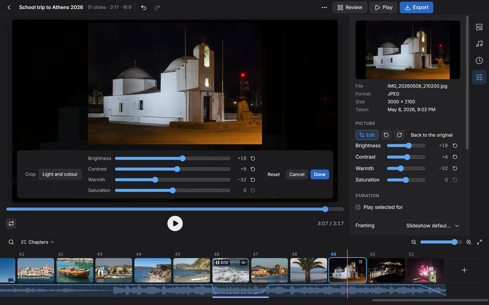
The edited photo is used everywhere: on every slide, in the Ken Burns motion, in the filmstrip, in the review and in the export. You can still move the framing on the slide as before. Pixelated faces stay on the same faces, and stay pixelated however much you brighten the picture. Videos are edited the same way.
With the keyboard: the arrow keys move the frame; with Shift they change its size. The light and colour sliders move with the arrow keys, in steps of 10 with Shift.
Themes and looks
The theme decides how slides look and change. There are 11 themes, e.g. Ken Burns (slow moves across the photo), Magazine (several photos in a grid) or Snapshots (instant photos landing on a table).
- Themes with several photos per slide arrange them automatically. In the Slide tab you choose another layout, or Free for your own collage.
- Group automatically: slides you combined or split, and slides kept as they were when photos were inserted, keep their photos, also after a theme change. Above the filmstrip you then see how many there are, e.g. 3 fixed slides · Group automatically; a click lets the theme spread all photos by its pattern again. For single slides, Group automatically is in the slide's menu. Sort by capture date always groups again. Ctrl+Z undoes it.
- The look (Natural, Vivid, Warm, Cool, Dramatic, Faded, Mono, Noir) colours only the photos and videos, never the background.
- Crop photos to fill applies to the whole show; any photo can be an exception with Whole picture.
- Title: title text, font, size, colour and an animation (handwriting, typewriter, big date) are set in the Themes tab.
- In the Classic theme you choose the transition (Dissolve, Push, Cube…) in the Duration tab.
Panoramas
Very wide photos, such as panoramas from a phone, are shown as in Photos on the Mac: they get a slide of their own, fill its height, and the view travels calmly and evenly from one end to the other. Very tall photos travel from top to bottom. A photo counts as a panorama from twice as wide as high on, when it is clearly wider than the slideshow (in 16:9 from about 2.5:1). Its slide lasts longer the wider it is, at most two and a half times a photo's time; a time of your own still applies. In the filmstrip such slides carry a double arrow.
- In the Slide tab, Panorama sets Pan, Whole picture or Crop to fill for one or several panoramas, and the Direction (left → right or right → left, top → bottom or bottom → top).
- In Ken Burns the pan is the start and end framing; you can still set your own framing as usual.
- Magazine shows the panorama on the whole page, Reflections as a wide card, Vintage Prints, Scrapbook and Snapshots as a wide print the picture travels in.
- Pixelated faces stay pixelated while the view pans.
Music
In the Music tab you add your own music files (MP3, M4A, WAV, FLAC and more). Several songs form a playlist that you reorder by dragging.
Each theme has its own music (CC0 or public domain, free to use, also in shared videos); your own music replaces it. Under Theme music you choose another song of the theme, of another theme or from the music library, which you filter by mood (e.g. Festive for a graduation or Christmas). Add to my music puts the chosen song into the playlist, where you can trim it or give it to a chapter.
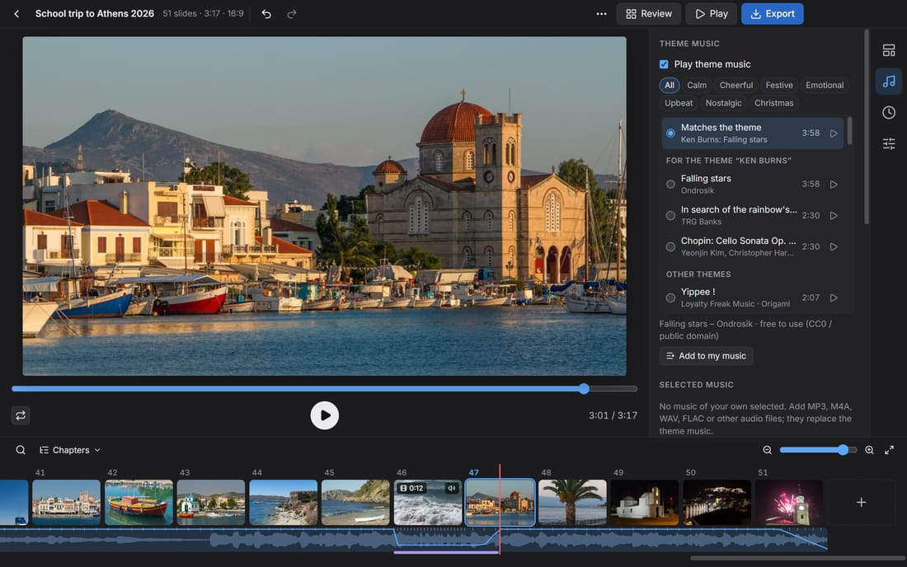
- Fit to music (Duration tab): the slideshow lasts exactly as long as the music. Or set your own total length.
- Change slides on the beat puts every change on a beat.
- The scissors next to a song choose its start and end, e.g. to skip a long intro.
- Music from here on: a song can start at a chapter slide, e.g. its own music for each day of a class trip.
- During videos with sound the music gets quieter automatically. Even out loudness brings songs and video sound to the same level.
Review
Review (top right) shows every photo and video in a grid, for going through a big import quickly with the keyboard.
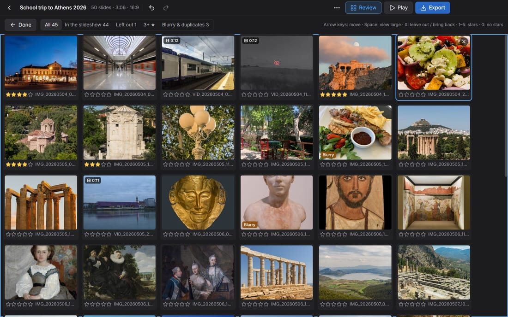
- X leaves a picture out of the slideshow (it stays in the project) and brings it back.
- 1 to 5 give stars, Space shows the picture large.
- Filters show e.g. only Left out, only rated pictures, or Blurry & duplicates.
- Only 3+ ★ in the slideshow (or another number) keeps just the best.
- Find rejects… in the ⋯ menu lists blurry photos and duplicates, including the same video twice (e.g. from WhatsApp).
Privacy: pixelating faces
Faces of pupils without photo consent can be pixelated. Face detection runs offline on your PC; no picture leaves it.
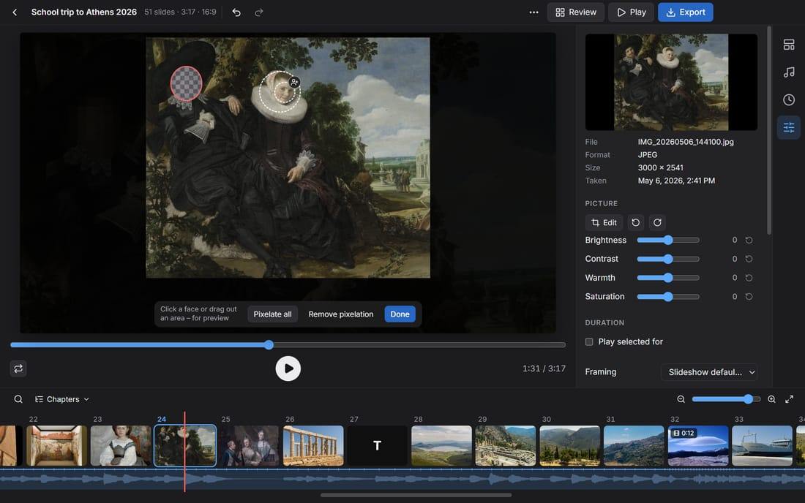
- Select a slide and click Pixelate faces… in the Slide tab.
- Click a detected face, or drag out an area with the mouse.
- With the person button (Pixelate this person everywhere) on a face, this person is looked for and pixelated in every photo and video of the show. The people list shows the matches; remove a wrong match with ✕.
- In videos, a clicked face is followed through the whole clip.
- Before exporting, Check faces… (⋯ menu or the export dialog) lists every slide with faces that are not pixelated yet.
Always check the result yourself: detection doesn't find every face, e.g. in profile or very small.
Export and the export queue
Export (top right) saves the slideshow as an MP4 video. Pick a preset such as YouTube 1080p, WhatsApp / e-mail (small) or TV / projector, or set resolution, frame rate and quality yourself.
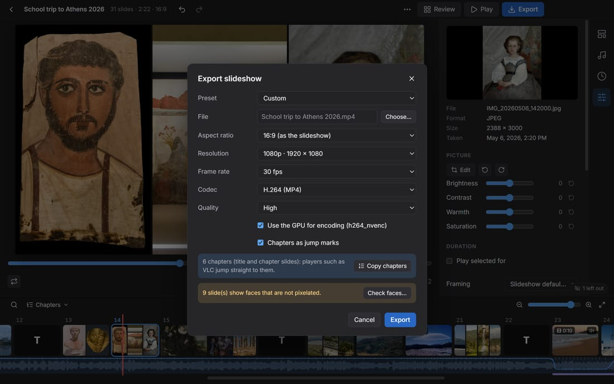
- Exports run in the background, one after another. You can keep working; the title bar shows the progress.
- Each export is a snapshot: later edits don't change it.
- After a crash or a restart, Continue in the Exports list picks up where it stopped.
- Graphics cards (NVIDIA, Intel, AMD) make exporting much faster. The PC doesn't go to sleep meanwhile.
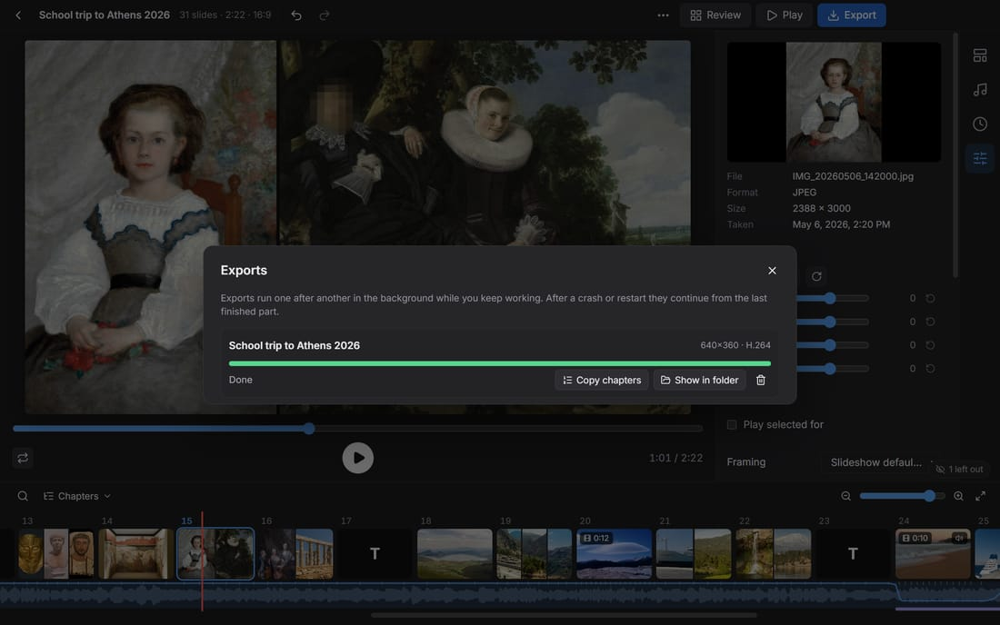
Cleaning up after a project
When the slideshow is finished, you remove what the app keeps for it in one place: ⋯ → Clean up after the project…, the eraser on the slideshow on the home screen, or Settings → Privacy. The dialog lists each part with its size:
- Face data: detected faces, face features and the people list with the names, also in older versions and in the cache. Whatever is pixelated stays pixelated, in the preview and in every later export. New photos are no longer recognised automatically afterwards, though.
- Uploaded photos and videos of the class (
Documents\Diashow Studio\Uploads) and pictures pasted with Ctrl+V (Documents\Diashow Studio\Pasted): all of them, or only those not in the show. Slides with deleted photos leave the show; export first. - Cache (thumbnails, video copies, sound): made again when needed.
- Older versions and export jobs (snapshots in the queue).
- Undo history: earlier states of the slideshow, so Ctrl+Z works after a restart too. Deleting face data or uploaded photos always deletes it too, because the earlier states still contain them. Settings → Privacy also clears it for one slideshow or all of them.
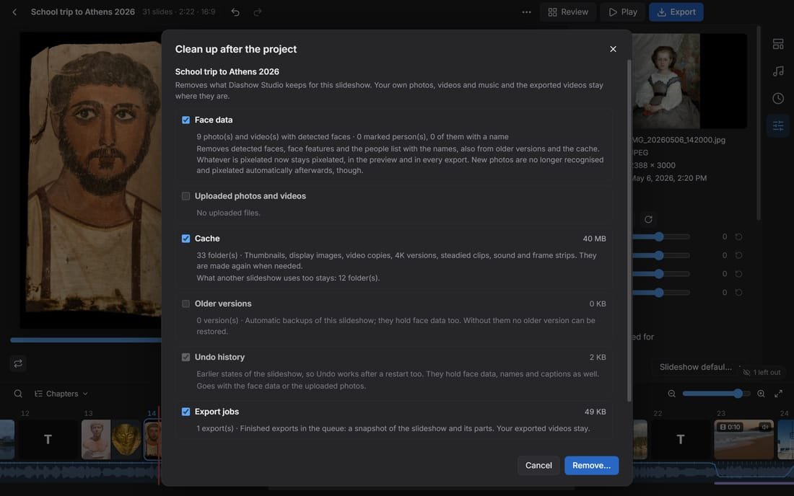
Your own photos, videos and music and the exported videos are not touched. Deleting is final, not to the recycle bin.
Deletion date: in the same dialog (or after the export) you decide when to clean up: in 1, 3, 6 or 12 months, or on a date. When the day has come, the home screen shows a hint on the slideshow and Deletion date reached: clean up?; Remind me in a month postpones it.
When you delete a slideshow, the app asks whether its cache, the uploaded photos and the export jobs go with it.
A ZIP archive of the slideshow is a copy that the clean-up cannot reach; delete it yourself.
Showing it
- Play shows the slideshow fullscreen (Esc ends it).
- Present (⋯ menu) shows the show on the projector, while the laptop shows the current and the next slide with time and controls.
- Kiosk mode (Settings) starts the app straight into a slideshow in a loop, e.g. for an open day.
Saving and moving projects
- Restore an older version… (⋯ menu): before each save the previous version is kept (the last 20).
- Pack project… copies the project with all photos, videos and music into a folder, e.g. for a USB stick. On the other PC, open the
.dshowfile. - If originals were moved (another folder, a new drive letter), Search a folder… in the yellow banner finds them again.
Archiving a slideshow as ZIP
When the slideshow is finished, ⋯ → Archive as ZIP… (or the archive symbol on the slideshow on the home screen) puts everything into one ZIP file, e.g. for the school archive or a USB stick: the project, the original photos and videos, your music or the theme song, the finished exports if you like, and short instructions (README.txt).
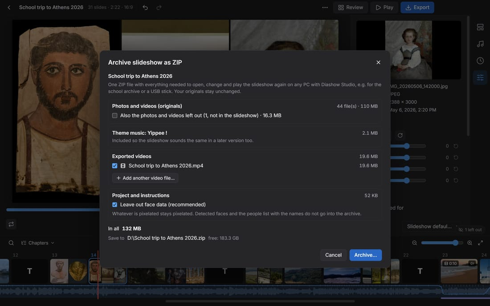
- The dialog lists each part with its size, the total and the free space at the target. Photos left out of the show only go in if you tick them; Leave out face data is on by default, and what is pixelated stays pixelated.
- Missing originals are named and skipped. After writing, the app reads the archive back and checks it.
- Opening it: extract the ZIP (right-click → Extract All…) and double-click the
.dshowfile or choose Open project…. The app does not open the slideshow straight from the ZIP.
The archive holds photos of the pupils. It is a copy that the clean-up cannot reach: keep it safe and delete it yourself by the deletion date; the instructions in the archive name it too.
Repairing a damaged project
If saving a project file was interrupted (e.g. by a power cut), the file is listed in red on the home screen with Repair…. The dialog offers two ways:
- Rescue from the file: everything still readable is taken over. A list says what was missing or repaired.
- Automatic backups: open an older, complete version.
The damaged file is kept either way. Smaller damage is repaired by the app itself when it opens the project; a notice then says what changed.
Settings and system check
Open Settings with the gear at the top right (or from the ⋯ menu).
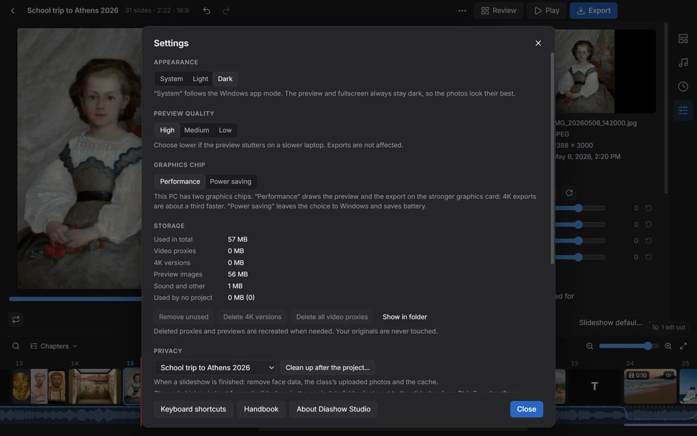
- Appearance: System, Light or Dark (see below).
- Preview quality: High, Medium or Low for slower laptops. Exports are not affected.
- Graphics chip (only on laptops with two graphics chips): Performance draws the preview and the export on the stronger graphics card, which makes 4K exports about a third faster. Power saving saves battery. The choice takes effect at the next start.
- Storage: shows how much space thumbnails and video versions take, and cleans up.
- Kiosk mode: see Showing it.
- Updates: if you like, the app asks GitHub once a day for a new version and then shows a hint. Nothing is installed automatically.
- Troubleshooting: the System check tests another PC (e.g. in the computer room): graphics card, video encoders, memory and a short export test. Copy report copies everything as text. There is also the diagnostics package (see below).
Light or dark
Under Appearance you choose System, Light or Dark. System follows the Windows app mode (Settings → Personalisation → Colours). The preview, the fullscreen player and the large view in Review always stay dark, so the photos look their best.
Diagnostics package
When something doesn't work, a diagnostics package helps whoever helps you: Settings → Troubleshooting → Create diagnostics package…. Before saving you see every file of the package; a click shows its content. It contains the error log, the system check, settings, versions and, of the open project, only counts, formats and sizes – no photos, videos, names or face data. Save… writes a zip file you can send by e-mail.
Keyboard shortcuts
| Space | Play / pause the preview |
| ← / → | Previous / next slide |
| Ctrl+Z / Ctrl+Y | Undo / redo |
| Del | Delete the selected slides |
| Ctrl+click, Shift+click | Select several slides |
| Ctrl+A | Select all slides |
| Ctrl+R | Rotate the selected photos to the left |
| Ctrl+F | Search slides (name, chapter, date, person) |
| F3 / Shift+F3 | Next / previous search match |
| Ctrl+V | Insert copied photos, videos or a screenshot after the selected slide |
| Ctrl+mouse wheel | Zoom the filmstrip in / out |
| Alt+Enter | Play fullscreen |
| Esc | Leave fullscreen, presentation or a dialog |
| F1 | This handbook |
| Alt+← / Alt+→ | Move the slide in the filmstrip |
| Shift+F10 | Open the slide's menu |
All shortcuts and mouse tips (in the app: Settings → Keyboard shortcuts)
Using the keyboard
Everything in Diashow Studio also works without a mouse:
- Tab and Shift+Tab move from control to control; the active one has a blue ring. Space or Enter presses a button.
- In the bar on the right, ↑ and ↓ switch between the tabs Themes, Music, Duration and Slide.
- The filmstrip is a single Tab stop: there ← and → go from slide to slide and select it (Shift selects a range), Alt+← / Alt+→ move the slide, Shift+F10 opens its menu.
- Ctrl+F opens the search in the filmstrip; ↑ / ↓ pick a match and Enter jumps to it. Ctrl+V inserts copied photos after the selected slide.
- Menus work with the arrow keys and Enter; Esc closes them.
- Esc closes every dialog; the focus then goes back to where you were.
- On a song's number, ↑ and ↓ move the song in the list. The handles for trimming videos and songs move with ← and →, with Shift in bigger steps.
- While you type in a text field, the shortcuts don't react.
If "Animation effects" are switched off in Windows, the app leaves out movement in its interface too. The slideshow itself plays as usual.
Troubleshooting
- Windows warns when installing ("Windows protected your PC"): choose More info and Run anyway. The app has no paid code signature.
- The preview stutters: lower the Preview quality in Settings. Exports don't get worse.
- A video stays at "being prepared": some phone videos (HEVC, HDR) are converted first. That takes a while, but only once.
- Exporting is very slow: check in the System check whether a hardware encoder is found. Without a graphics card, a smaller resolution (720p) helps.
- Files are missing: the originals were moved – choose Search a folder… in the yellow banner.
- Files on a network drive stay blocked: a project from another PC points to shares such as
\\server\photos. Because Windows signs in there with your account, the app asks first at the top of the editor. Choose Allow access only if you trust the project; shares you import from yourself are trusted automatically. - Phones can't reach the laptop: laptop and phones must be on the same Wi-Fi, and the Windows firewall must allow the app. Otherwise use the Windows mobile hotspot.
- Anything else: create a diagnostics package under Settings → Troubleshooting and send it with a description to whoever helps you.
- Reporting a bug: Report a problem… (under Settings → Troubleshooting or in About Diashow Studio) opens a form on GitHub with the app version, Windows version and graphics card already filled in; you need a free GitHub account for it. The report is public: attach the diagnostics package at most, never photos of pupils.
About, licences and updates
Diashow Studio is free software (MIT licence). It includes FFmpeg (GPL), fonts, face detection models and other libraries; their licences and the source of FFmpeg are under About Diashow Studio. There you can also Check for updates.